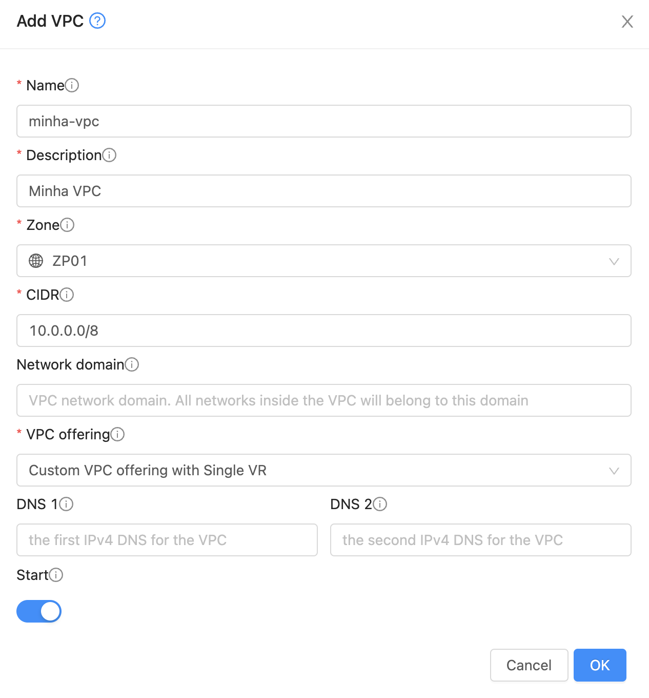
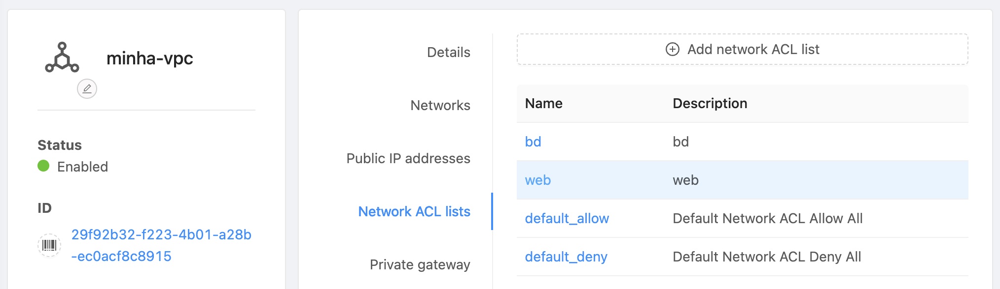
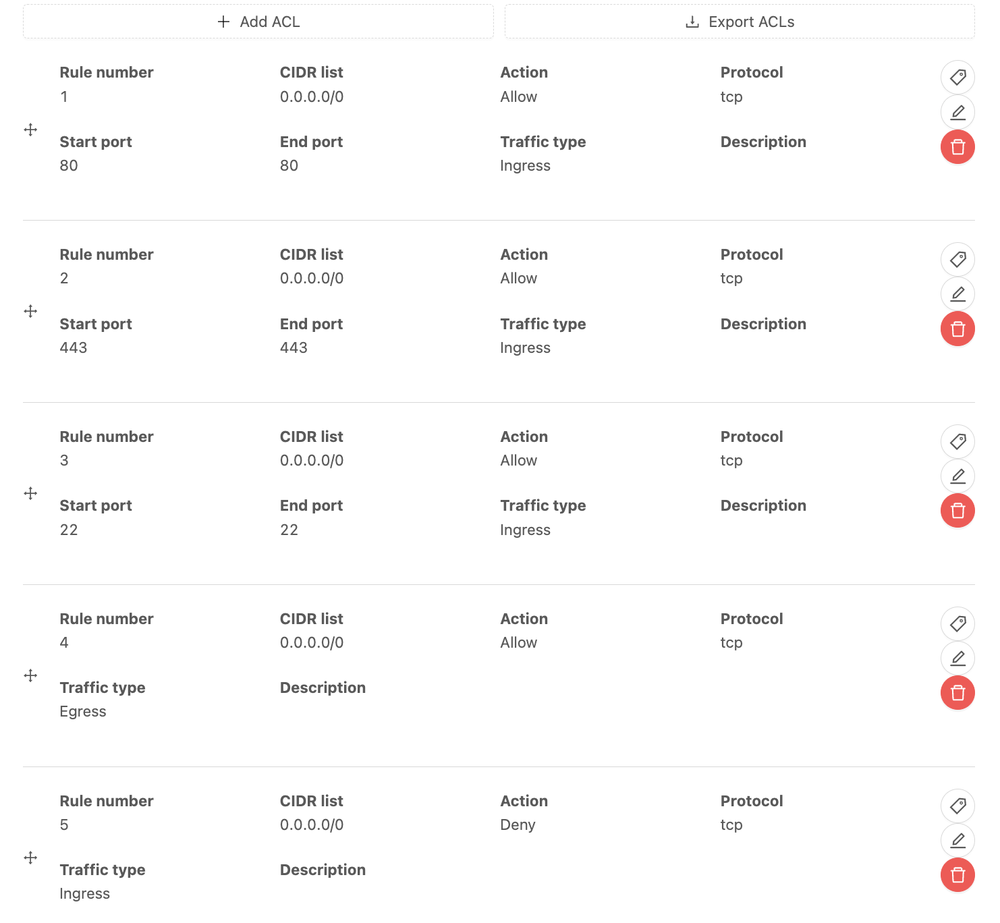
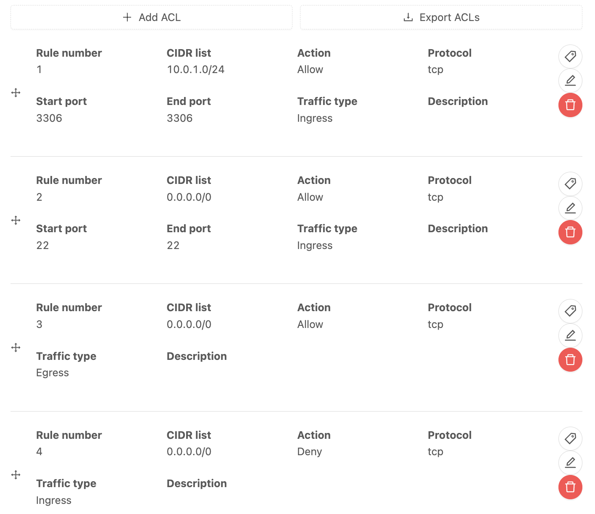
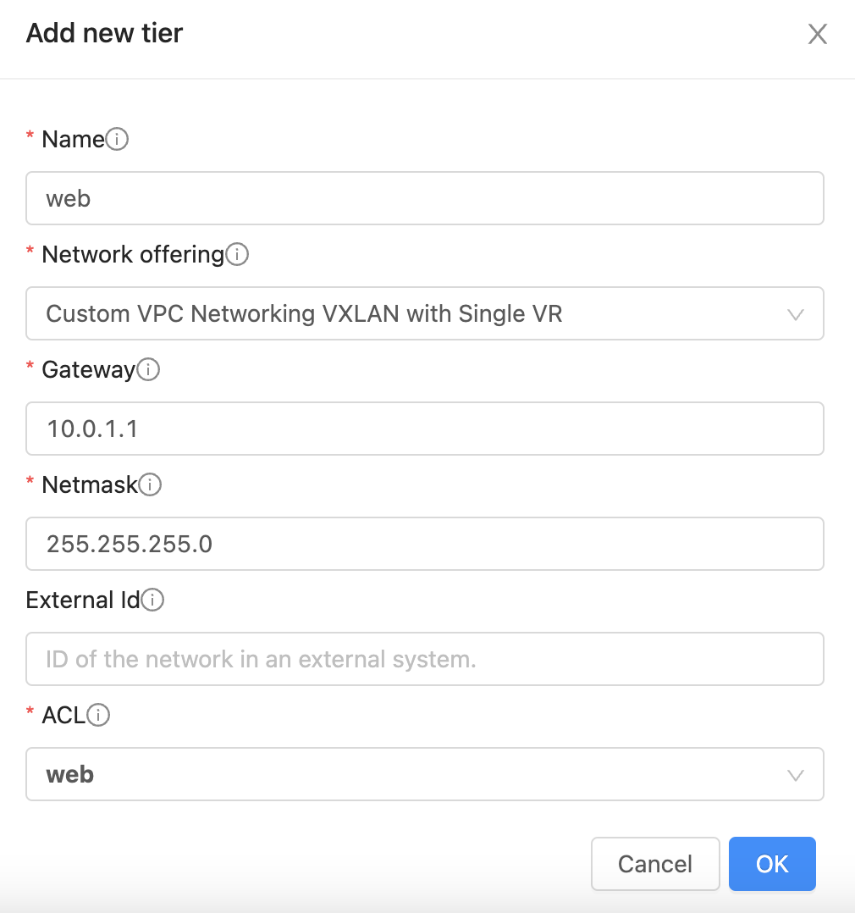
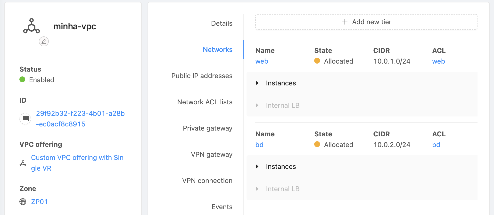
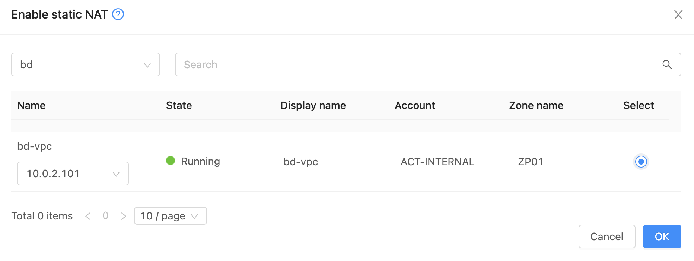

VPC
Introdução
Os diagramas abaixo resumem as principais diferenças entre Guest Networks, conceito que viemos utilizando até aqui, e VPC, que introduziremos nesta seção.
Guest Network
graph LR
subgraph "Internet Pública"
Internet(Internet)
end
subgraph "Guest Network 10.0.0.0/8"
A1(Web 1<br>10.1.1.2)
A2(Web 2<br>10.1.1.3)
A3(App<br>10.1.1.4)
A4(DB<br>10.1.1.5)
end
Internet --> RD(VR:<br>NAT<br>Load Balancing<br>Firewall<br>Gateway: 10.1.1.1)
RD --> A1
RD --> A2
RD --> A3
RD --> A4
style RD fill:#cc9999VPC
graph LR
subgraph "Internet Pública"
Internet(Internet)
end
subgraph "VPC 10.0.0.0/8"
subgraph "BD tier 10.0.3.0/24"
DB(DB<br>10.1.3.10)
end
subgraph "App tier 10.0.2.0/24"
App(App<br>10.1.2.50)
end
subgraph "Web tier 10.0.1.0/24"
Web1(Web 1<br>10.1.1.101)
Web2(Web 2<br>10.1.1.102)
end
end
Internet --> CS_VR(VR:<br>NAT<br>Load Balancing<br>ACL<br>Gateway: 10.1.1.1<br>Gateway: 10.1.2.1<br>Gateway: 10.1.3.1)
CS_VR --> Web1
CS_VR --> Web2
CS_VR --> App
CS_VR --> DB
style CS_VR fill:#cc9999Em resumo:
- Enquanto numa Guest Network há apenas um segmento de rede, com visibilidade irrestrita entre as VMs, numa VPC é possível segmentar a rede entre diferentes tiers.
- Na Guest Network utilizamos Firewalls para cada IP. Na VPC as regras de acesso são definidas via ACLs (Access Control Lists) entre as tiers e entre estas e a internet pública.
Tip
Todos os demais recursos descritos anteriormente como User Data, Templates, Shapshots, Load Balancing e Autoscaling funcionam normalmente em VPCs.
Neste tutorial criaremos um ambiente com duas tiers, web e bd. Resumo dos passos:
- Criar VPC
- Criar ACLs
- Criar tiers alocando as respectivas ACLs
- Criar instâncias em cada tier
- Mapear IPs públicos às instâncias
Criar VPC
Acesse Network, VPC, Add VPC + preenchendo:
- Name: minha-vpc
- Description: Minha VPC
- CIDR: 10.0.0.0/8

Criar ACLs
Em Network, VPC clique sobre minha-vpc, Network ACL lists e Add network ACL list.
Crie duas ACL lists com nomes web e bd. Descrições podem ser iguais aos nomes.
ACL para Web
- Clique sobre a ACL web: 
- Selecione ACL list rules, + Add ACL algumas vezes para criar as regras, nesta ordem:
- CIDR list: 0.0.0.0/0, Action: Allow, Start port: 80, End port: 80, Traffic type: Ingress
- CIDR list: 0.0.0.0/0, Action: Allow, Start port: 443, End port: 443, Traffic type: Ingress
- CIDR list: 0.0.0.0/0, Action: Allow, Start port: 22, End port: 22, Traffic type: Ingress
- CIDR list: 0.0.0.0/0, Action: Allow, Traffic type: Egress
- CIDR list: 0.0.0.0/0, Action: Deny, Traffic type: Ingress
Ao final, a página mostrará: 
Info
As ACLs são avaliadas na ordem em que são criadas, até o primeiro match. Por isso, a regra de Deny é a última, proibindo tráfego não coberto pelas regras anteriores.
ACL para BD
- Clique sobre a ACL bd
- Selecione ACL list rules, + Add ACL algumas vezes para criar as regras, nesta ordem:
- CIDR list: 10.0.1.0/24, Action: Allow, Start port: 3306, End port: 3306, Traffic type: Ingress
- CIDR list: 0.0.0.0/0, Action: Allow, Start port: 22, End port: 22, Traffic type: Ingress
- CIDR list: 0.0.0.0/0, Action: Allow, Traffic type: Egress
- CIDR list: 0.0.0.0/0, Action: Deny, Traffic type: Ingress
Ao final, a página mostrará: 
Info
Na primeira regra, o bloco 10.0.1.0/24, a partir do qual permitimos conexão para a porta 3306 (MySQL), será atribuído ao tier web. Ou seja, esta é a regra que permitirá aos servidores do tier web conectarem-se ao tier bd.
Criar Tiers
Tier Web
- Em Network, VPC clique sobre minha-vpc, Networks e + Add new tier.
- Preencha com:
- Name: web
- Gateway: 10.0.1.1
- Netmask: 255.255.255.0
- ACL: web

Tier BD
- Da mesma forma, Network, VPC clique sobre minha-vpc, Networks e + Add new tier.
- Preencha com:
- Name: bd
- Gateway: 10.0.2.1
- Netmask: 255.255.255.0
- ACL: bd
Ao final, os tiers criados aparecerão como: 
Criar instâncias
Instância web
- Clique Compute, Instances, Add Instance +
- Selecione My templates, To Do app
- Em Compute offering escolha micro
- Em Networks selecione web, na VPC Minha VPC
- Em SSH key pairs selecione minha-chave
- No nome coloque web-vpc
Instância BD
- Clique Compute, Instances, Add Instance +
- Selecione Community, Ubuntu Server 22.04
- Em Compute offering escolha micro
- Em Networks selecione bd, na VPC Minha VPC
- Em SSH key pairs selecione minha-chave
- Em Advanced mode, habilite Show advanced settings e selecione mysql no Stored Userdata
- No nome coloque bd-vpc
Mapear IPs
Instância web
Mapearemos um IP público para possibilitar o acesso à instância web-vpc. De acrodo com a ACL criada, serão aceitas conexões nas portas 22 (SSH) e 80/443 (HTTP/HTTPS).
- Selecione Network, VPC, minha-vpc, Public IP addresses e + Acquire new IP. Anote o IP a ser usado para a instância web-vpc:
191.252.224.117 - Clique sobre o IP 191.252.224.117
- Clique sobre o botão Enable static NAT
- Escolha o tier web e selecione a instância web-vpc
Instância BD
Também mapearemos um IP público para possibilitar o acesso à instância bd-vpc. De acordo com a ACL criada, serão aceitas conexões apenas na porta 22 (SSH). Note que a ACL para acesso à porta 3306 (MySQL) só permite acesso a partir do range 10.0.2.0/24 pertentente ao tier web, de forma que o banco permanece fechado para a internet pública.
- Selecione Network, VPC, minha-vpc, Public IP addresses e + Acquire new IP. Anote o IP a ser usado para a instância bd-vpc:
191.252.224.118 - Clique sobre o IP 191.252.224.118
- Clique sobre o botão Enable static NAT
- Escolha o tier bd e selecione a instância bd-vpc 
Configurações
Instância web
Editaremos o script todo.php para acessar o banco de dados no novo endereço.
- Em Compute, Instances, selecione bd-vpc e anote o IP privado:
10.0.2.101 - Acesse a instância web-vpc via SSH:
ssh root@191.252.224.117 - Uma vez logado edite o arquivo:
nano /var/www/html/todo.php - Altere o endereço do banco de dados par o IP privado do banco:
<?php $user = "example_user"; $password = "pass_bd"; $database = "example_database"; $table = "todo_list"; $host = "10.0.2.101"; // Coloque o IP privado do servidor bd no CloudStack try { $db = new PDO("mysql:host=$host;dbname=$database", $user, $password); echo "<h2>TODO</h2><ol>"; foreach($db->query("SELECT content FROM $table") as $row) { echo "<li>" . $row['content'] . "</li>"; } echo "</ol>"; } catch (PDOException $e) { print "Error!: " . $e->getMessage() . "<br/>"; die(); } ?>
Instância BD
- Acesse a instância bd-vpc via SSH:
ssh root@191.252.224.118 - Verifique o término da instalação:
cloud-init status # aguarde até obter 'status: done' systemctl status mysql # aguarde até obter status do serviço 'running' - Para configurar o banco:
mysql -u root -h localhost - Execute o script:
CREATE DATABASE 'example_database'; CREATE USER 'example_user'@'%' IDENTIFIED BY 'pass_bd'; GRANT ALL PRIVILEGES ON example_database.* TO 'example_user'@'%'; FLUSH PRIVILEGES; CREATE TABLE example_database.todo_list ( item_id INT AUTO_INCREMENT, content VARCHAR(255), PRIMARY KEY(item_id) ); USE example_database; INSERT INTO todo_list (content) VALUES ("Minha primeira tarefa"); INSERT INTO todo_list (content) VALUES ("Minha segunda tarefa");
Teste
Acesse as URLs para testar:
http://191.252.224.117
http://191.252.224.117/info.php
http://191.252.224.117/todo.php